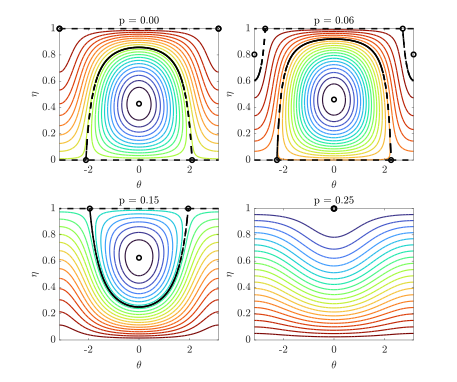
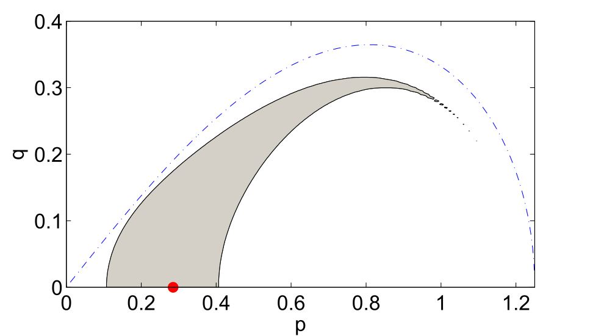
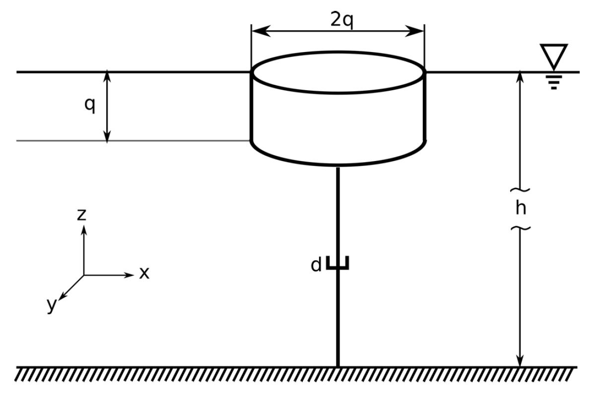
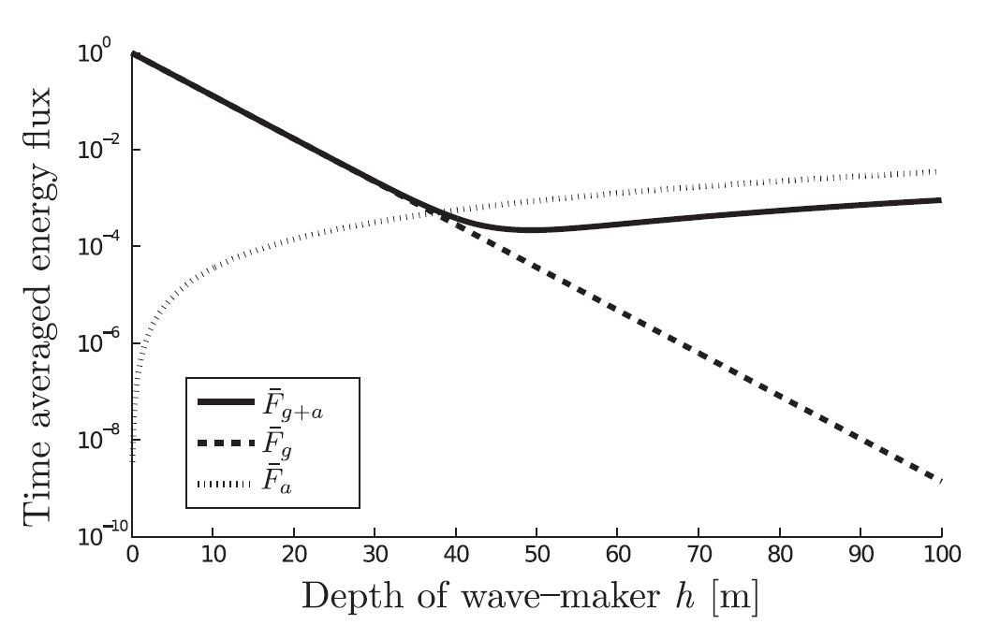
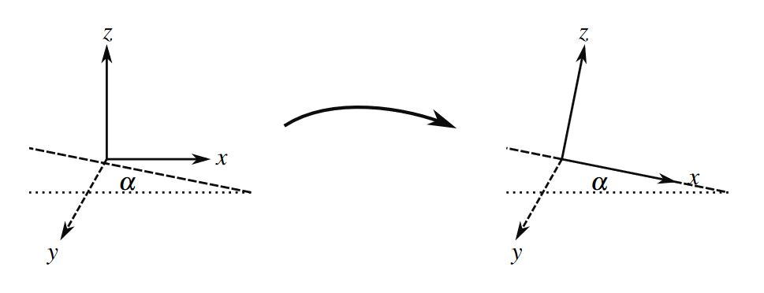

The very simplest mathematical solutions describing waves on the surface of water are sine waves. These arise out of a simplification of water wave theory that assumes that waves are not too steep, and the equations can be treated as linear.

Indeed, some of the waves we see in the ocean look at first glance like sine waves, or superpositions of sine waves. Nevertheless, attempts to generate these sine waves in the laboratory - to conduct experiments on their properties - repeatedly ran into difficulties.
In particular, even with a wavemaker oscillating periodically in a prescribed manner, the result in the wave flume was often something very different than expected - and much messier! The reason for this became clear only during the 1950s and 1960s: like a house of cards or a ball on top of a hill, some waves are unstable, and reconfigure themselves when even the slightest disturbance occurs.
That's the situation people encountered in the lab: water doesn't like to be in the shape of a sine wave, and energy is redistributed so that a single sine wave becomes a combination of different waves due to this "modulation instability". The word "modulation" here refers to the small disturbance, which can come from almost anywhere.
Describing this situation mathematically is quite tricky, and usually requires partial differential equations like the nonlinear Schrödinger equation. Moreoever, while it's usually possible to describe this instability mathematically for a short, initial time (using something called "linear stability theory") it's very hard to follow the longer-time evolution, which usually requires numerical computation.
For a number of interesting cases we showed that you can describe these wave instabilities exactly using a very simple system of ordinary differential equations. These allow you to visualise what happens at all times in the future by looking at phase portraits, which doesn't require any computation.
Looking at the (modulation) instability of water waves through the phase plane actually allows you to capture new, never-before-seen solutions. Because these are very sensitive to even the smallest errors it's essentially impossible to capture them by purely numerical methods, but they pop out of the phase-plane description. This includes new "breather" solutions that turn one wave into two waves (or vice versa), as well as "steady" solutions where waves are mathematically in resonance but don't exchange any energy.
In many cases we want to know how high waves are on average. For example, if you want to go surfing, you'll want the waves to have be high and have a long period (unless you're a beginner, in which case you might prefer smaller waves). Of course, each wave is different, and you might wait to find one that's just right before you begin paddling.
A surfer can judge when the wave is likely to get to them, and paddle just in time to catch it. But an automated system can't make such a judgement call - it needs to rely on sensors and predictions in order to adjust parameters. There are lots of industrial applications of "short term" forecasting - particularly involving the control of objects floating in the water. For example, wave energy converters often move with the waves, and if you know in advance exactly what waves the device will encounter (based on observations at other points) you can "tune" them to capture more energy. In other applications you might want to predict wave motions so you can plan when to carry out a time-sensitive operation, which might require - for example - that a ship or platform doesn't roll or pitch too much.
The problem is that reconstructing where a wave will be based on where it was a minute ago is quite tricky. This is because of "dispersion" or the tendency for different components to travel at different speeds, which causes the wave shape to change. This dispersion isn't only a linear effect, but is different depending on how high the waves are (in general taller waves are faster than shorter waves); it also turns out that the waves affect one another - for example, a short wave that "rides" on a long wave "speeds up". This was found in work by Longuet-Higgins and Phillips in the 1960s for two waves, and generalised for many waves in [1].
In a series of papers [2-4] with collaborators, visiting researchers, and students, we captured many of the important effects of nonlinear dispersion using algebraic terms that come from the mathematical theory. This means that we can forecast where a wave will be at a later time more accurately, but without actually doing any hard computations (like solving differential equations). In particular, these computations are as fast as just using the simpler, linear, theory.
For weakly nonlinear waves, nonlinear interaction appears with quadratic nonlinearities in shallow water, and cubic nonlinearities in deep-water. Such nonlinearities are responsible, for example, for the amplitude-dependent change in wave celerity found by Stokes in the mid 19th century. Since work by Phillips and others, the role of nonlinear resonant and near-resonant interactions has become appreciated as a major contributor to the dynamics of ocean surface waves.

In linear theory, waves pass through one another unchanged due to the principle of superposition. Once weak nonlinearities are taken into account, each wave is coupled with the other waves present in the sea. Thus, the frequency of a short wave may be appreciably changed by the presence of long waves (the short waves "surf on top of" the longer waves). The same principle can be shown for spectra of waves [2], where frequencies higher than the spectral peak frequency are most effected by a type of generalized Stokes' correction.
In deep water, the phenomena associated with cubic nonlinear interaction are captured by the Zakharov equation, from which the nonlinear Schrodinger equation can be derived in the limit of narrow-bandwidth. We have used this Zakharov equation formulation extensively in studying nonlinear waves, and likewise explore stochastic analogues which govern averaged properties, like the energy distribution of the sea-states. In particular, going beyond the paradigm of Hasselmann's kinetic equation, we are interested in the effect of statistical inhomogeneity [4], as well as fast evolution of homogeneous sea-states [2]. A review of some recent developments, in both deep and shallow-water recently appeared in [1].
We developed a number of analytical models of wave energy converters, based on floating plates [4], floating cylinders [1], and coupled floating cylinders [2,3] in order to study device design, response, and survival in a range of sea states. While idealized, the linear theory for devices can be described in a mathematically simple form, and may be understood analytically without resorting to approximations.

The devices investigated were used to model arrays of converters, and to study the wave-energy potential in spectral sea-states, ultimately with a directional distribution. The potential for wind regrowth of waves between arrays was explored over an indicative ocean basin, and the effects of array spacing explored [3,4]. Using device responses, a refinement to the power matrix in terms of device survival was proposed in [1], which suggested a boolean survivability matrix be added to the usual calculation of mean annual energy production. This idea was explored further using data from the Israeli Mediterranean, resulting in recommendations for device sizing. While the Israeli Mediterranean is a high-variability but low mean power site, making it less than ideal for wave-energy extraction, the methodology used is easily applicable to any device design and location for which data is available.
In the usual water wave problem, the small compressibility of water is neglected without great effect. In turn, studies of underwater acoustics, which focus on compressibility, usually neglect the influence of gravity and the presence of surface waves. Even in the linear problem, it is interesting to see the interplay between compressibility and the restoring force of gravity. By adapting Havelock's classical result for wavemakers in [1], we investigated how energy from a disturbance (like an ideal wavemaker) is transferred into the creation of surface and so-called acoustic-gravity wave modes. Formally these latter modes arise from the evanescent solutions to the linear water wave problem, some of which turn into propagating modes due to the effects of compressibility. With increasing depth of a disturbance, more and more of the energy of a disturbance goes to generating compressibility modes - a fact also observed by Nosov in connection with tsunami.

In 1804 Franz Josef Gerstner constructed a remarkable exact solution to the water wave problem in infinite depth, describing periodic traveling waves with trochoidal
(or cycloidal) streamlines. This is all the more remarkable considering no nonlinear theory of water waves had been developed, and only the rudiments of the now-classical linear theory
were being worked out. Gerstner's solution consisted of water particles moving in circular trajectories (some 30 years before George Green elucidated the particle paths of linear waves in deep water)
with the free surface therefore forming a trochoid. The only caveat was that this solution was rotational, and written in Lagrangian (or particle following) coordinates.
Numerous extensions of Gerstner's wave to a variety of scenarios have been explored in recent years, and it remains fascinating to find exact solutions to the full, nonlinear equations in
such a simple form. These solutions include edge waves on sloping beds [3,6], waves in stratified flow [4,5], geophysical waves (including Coriolis forces) [1], and others.
The Korteweg de Vries equation (KdV), and particularly its sech2 soliton solutions, are commonly used to model tsunami. Since tsunami wavelengths are on the order of hundreds of kilometres, and the ocean depths are several kilometres at best, this shallow-water model seems appropriate. Two papers [1,2] more closely investigated the asymptotic regime associated with the KdV, to see whether it was strictly applicable to tsunami propagation. This so-called KdV balance - the balance between nonlinearity and dispersion needed for KdV to apply in space and time - is also affected by shear flow, which was investigated in [1] by means of a formulation developed by Freeman and Johnson.
Edge waves are a curious wave pattern, which propagate in the longshore direction (i.e. along a beach, not towards it). Discovered as a mathematical curiosity by G. G. Stokes, they came into their own some 100 years later in discussions of nearshore wave dynamics. Difficult to detect experimentally, they have nevertheless been implicated in the formation of beach cusps, crescentic bars, and the spacing of rip currents (see P. D. Komar's engaging book Beach Processes and Sedimentation). Inspired by the commonalities between linear, deep water theory and the Gerstner wave, and building on a study of Gerstner-type edge waves [2], I also investigated the particle trajectories in linear and weakly nonlinear edge wave models [1]. Although the flow is three-dimensional, it is possible to show by a little manipulation that the particles in each plane parallel to the sea-bed stay within that plane. Subsequently the particle trajectories can be analysed using well-known techniques for 2D flows!
